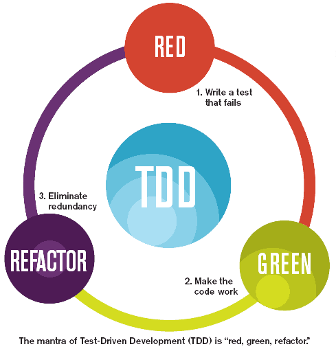

Tú molas, pero tu navegador no tanto. Para que funcione la presentación como te mereces tienes que abrirla con Chrome, Safari o Firefox.
Vamos a hablar de por qué hacemos tests, y lo fundamental es que pretenden cambiar el sentido de urgencia, de ahí la elección del chiste malo.
A
relaxing cup
of
code
with
tests
@Test
Los desarrolladores conocen las ventajas del testing en su trabajo diario
Queremos que los asistentes se impliquen, sientan que realmente les puede ayudar. Por tanto, pediremos que levanten la mano "todos los desarrolladores de software que haya en la sala" (incluyendo product owners). A continuación, con cada motivator hablaremos de una problemática que podemos abordar con los tests. Lo ideal sería contar una breve batallita por cada uno. Quien lo haya sufrido en los últimos meses puede bajar la mano. Es cierto que no hay que intentar convencer a nadie, pero sí creo útil que se visualicen usándolos.
Funciona?
Funciona
Tengo la certeza* de que funciona
(en la medida de lo posible)
Hablaremos de la incorrección y desactualización de la documentación, en términos tanto de requisitos como APIs.
Documentación
Mintiendo desde los 40's
Lo engañoso de los problemas, producidos por un complejo diseño, por ejemplo.
Pequeños bugs
"Esto lo corrijo en 5 minutos"
¿Cuántas veces hacemos algo y estropeamos otra cosa? Ojo, esto no es malo sólo por el fallo, sino que además nos condiciona para después, porque vamos a estar reacios a hacer cosas.
Side effects
Porque a todos se nos va la mano
Sobran las explicaciones: caemos en código que no queremos tocar ni con un palo.
Legacy code
Montañas de mierda que nadie ha generado
Te pones a solucionar un problema y aparecen 500 más.
Bug hunting
Un bug nunca va solo
El miedo a romper.
Fragilidad
Sé que si toco ahí lo rompo
La facilidad del cambio.
Refactor
Quiero poder cambiar código sin que se caiga todo
... cómo?
Tenemos que cambiar nuestro método de trabajo. Las personas nos equivocamos, necesitamos una red de seguridad. Es normal que no querramos "tocar lo que funciona", aunque esté mal, por miedo. Es normal que la documentación no se actualice... El testing aborda varios problemas sistémicos de nuestro trabajo, por nuestra propia naturaleza. Es cambiar el "para la próxima vez tendré más cuidado" con "estaré cubierto por tests si meto la zarpa".
95% of the problems in business are system driven and only 5% are people driven
Deming
Introducir brevemente los grandes bloques a presentar
Unit testing
[Unidades individuales de código]
- Simplifica el diseño
- Facilita el cambio
- Documenta
Integration testing
[Coordinación entre componentes]
End-to-end
[Usuario final]
TDD
[Desarrollo dirigido por tests]
- Método de trabajo
- "Doble contabilidad"
- Certeza* de corrección

ATDD
[Desarrollo dirigido por tests de aceptación]
- Comunicación con el usuario
Aquí los "novatos" se estarán empezando a agobiar por la de cosas que hemos contado, así que rematemos pasando muy rápido por los siguientes términos para que quede claro que hay mucho que aprender, pero que podemos irlo haciendo poco a poco y no merece la pena agobiarse.
Mocks
Ni comentar
TestDataBuilders
Aquí paramos a respirar, y explicamos que esto se puede aprender poco a poco.
...
¿Merece la pena?
Vaya por delante que esto no es una bala de plata...
No silver bullet
... pero el clamor es positivo:
Hacer TDD es muy productivo y rápido
Programming and testing together is faster than just programming. (...) The gain comes from a reduction in the time spent debugging.
Kent Beck, XP Explained
... el testing es El Bien, pero hay que hacerlo bien
Test right
Las armas no matan...